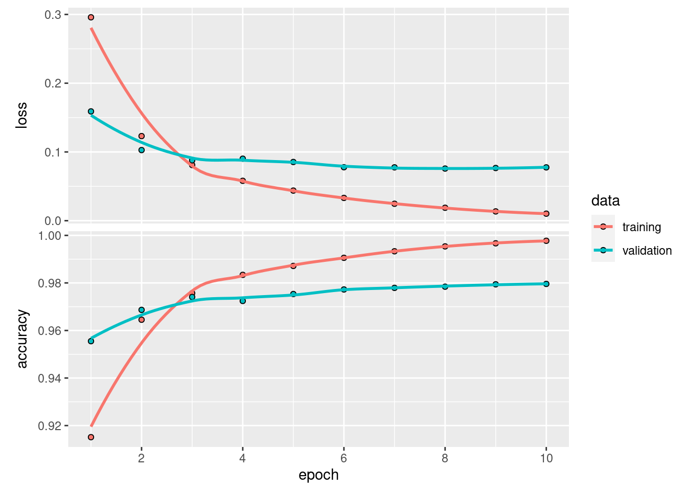

16 Deep Learning
16.1 What is Deep Learning?
In the Prediction module we learned how we could use models to make predictions about a response variable.
All of the models we considered were fairly simple: we took some inputs, fed them into a mathematical equation, and got an output. This simplicity makes it easy to understand the connection between the inputs and output. However, it also limits the accuracy of our predictions when this relationship is complicated.
Consider the challenge of seeing an image (the input) and identifying what it is an image of (the output). Methods like linear models struggle with this type of prediction because there is not an obvious linear connection between the pixels of an image and the object that the image represents.
However, the human brain is very good at this type of task! This inspired computer scientists to study the human brain and try to develop computer models that work in a similar manner.
The human brain (and nervous system) is composed of long cells called neurons. Each neuron has lots of arms that connect to other neuron cells. Electrical pulses travel up and down these arms, and based on the signals that each neuron receives, it then sends its own signal on to other neurons.
Thus each neuron is a bit like one of the models that we created in the Prediction module. However, the brain is composed of many of these interconnected neurons.
Could we make a brain-like computer model by connecting together many simple models?
It turns out that the answer is yes! These are called artifical neural networks and work by building up layers of simple models:

Each of the circles in this picture represents a node.
There are three input nodes (explanatory variables) to this neural network (the yellow circles).
There are two “hidden layers” (blue and green). Each of the nodes in these layers takes all of the nodes in the previous layer as inputs, and then sends its output to all of the nodes in the next layer.
The final layer in this example contains a single node. This node will produce a single prediction (e.g. yes/no, true/false, or a single number).
In subsequent sections we will learn more about all of these pieces, such as:
- What are the input nodes, and how many do we have?
- What are the models at each of nodes in the hidden layers?
- How many output nodes do we need, and what should they output?
- How do we train these networks to make accurate predictions?
16.2 Deep learning in R
We will use two packages to create deep learning models: tensorflow and keras.
tensorflowis an R package that allows to run a piece of software called TensorFlow that was developed by Google to run neural networks.kerasis an R package that provides a friendlier interface to TensorFlow.
16.3 The MNIST dataset
As an example, we will use the MNIST dataset, which is a famous dataset containing pictures of numbers such as this one:
Warning: The `x` argument of `as_tibble.matrix()` must have unique column names if `.name_repair` is omitted as of tibble 2.0.0.
Using compatibility `.name_repair`.
This warning is displayed once every 8 hours.
Call `lifecycle::last_lifecycle_warnings()` to see where this warning was generated.
The MNIST dataset can be downloaded using dataset_mnist() function from the keras package, e.g.
mnist <- dataset_mnist()The MNIST dataset is already divided into training and test sets (of 60,000 and 10,000 images respectively). Each image comes with a label telling us what digit is in the image.
All of these are stored in the mnist variable we created above. To make our lives easier, we will split all of the training and test images and labels into 4 separate variables:
train_images <- mnist$train$x
train_labels <- mnist$train$y
test_images <- mnist$test$x
test_labels <- mnist$test$y16.4 Images as inputs
Before we build our model, we need to understand how data is stored in images.
Digital images are composed of small squares called pixels. Each pixel has a single color.
The MNIST images are 28 pixels wide and 28 pixels high. They are greyscale images, which means that each pixel has a single color that is somewhere on the spectrum from white to black. There are 256 possible shades on this spectrum, each represented by an integer number from 0 (white) to 255 (black).
For example, this image shows the intensities in each of the pixels of one of the MNIST images:

Each pixel in our image will be an input to the model. Since there are 28 by 28 pixels in each images, then we will need \(28 \times 28 = 512\) input nodes in any artificial neural network that we create.
16.5 Defining a neural network shape
The following code defines the shape of an artificial neural network that we will be able to train on the MNIST dataset.
first_model <- keras_model_sequential(input_shape = 28*28) %>%
layer_dense(units = 512, activation = "relu") %>%
layer_dense(units = 10, activation = "softmax")We start our code with the
keras_model_sequential()function to indicate that we will be creating a neural network composed of a series of layers. Theinput_shapeparameter indicated how many inputs nodes we will need.Then we pipe to each of the layers that we wish to add on to the neural network, which are created with the
layer_dense()function.- The first is our only hidden layer. We have chosen to have 512 nodes (
units) in this layer. - Finally we add a layer of
10nodes which will be out output layer. We need 10 output nodes because we wish to predict 10 different categories (i.e. the digits 0, 1, 2, …, 9). Each node will contain the probability that one of those 10 digits is in the image. Our prediction will be the digit that has the highest probability.
- The first is our only hidden layer. We have chosen to have 512 nodes (
What about the activation parameters in the layer functions?
Fundamentally, each node in the just contains a linear model (i.e. a linear combination of all the inputs from the previous layer)! However, the relationship between image pixel intensities and the digits 0-9 is non-linear. Therefore we convert each node’s linear prediction into a non-linear prediction.
We did something very similar with logistic regression (where we used the sigmoid function to convert from a linear output to a response between 0 and 1). Here we are using a function called a “Rectified Linear Activation function” or relu for short. You don’t need to understand the details of the relu activation for this module, but there are many good tutorial or videos about it on the internet if you want to learn more (such as this article).
The final layer uses a different activation function called "softmax". This just ensures that all the 10 probabilities of the 10 output nodes all add up to 1.
16.6 Compiling the model
Before we can train a Keras model, we need to do an additional step called compilation. In this step we state all the information about how the model is to be trained.
To do this, we use the compile() function from the keras package:
compile(
first_model,
optimizer = "rmsprop",
loss = "sparse_categorical_crossentropy",
metrics = "accuracy"
)We will not worry too much about these details here, but briefly:
- The
optimizerparameter tells Keras what algorithm to use to fit the model to the training data. - The
lossparameter tells Keras what function to use determine how bad the model is at each step of the optimization process. - The
metricsparameter controls what information will be reported back to us as the model is optimized.
Note that we do not assign the output of the compile() function to a new variable. This is one of the rare cases in R where the input variable (first_model) will be modified automatically to contain these extra parameters.
16.7 Training the model
Our model will take in 784 pixels at a time. Unfortunately, the train_images variable does not contain rows of 784 pixels. We can find it’s dimensions with the dim() function:
dim(train_images)[1] 60000 28 28Each image is currently stored as a grid of 28x28 pixels. We can reshape (or “flatten”) each of these images into a single row of 784 pixels using the array_reshape() function
train_x <- array_reshape(train_images, c(60000, 28 * 28))(You could check the new dimensions by running dim(train_x).)
To improve the process of fitting the model, we also want to rescale the grayscale intensities from integers between 0 and 255 to decimals between 0 and 1. We can do this by dividing by 255, e.g.
train_x <- train_x / 255Finally we are ready to fit the neural network to the images in this new train_x variable. We do this with the fit() function:
history <- fit(
first_model,
x = train_x,
y = train_labels,
batch_size = 128,
epochs = 10,
validation_split = 0.2
)Epoch 1/10
375/375 - 2s - loss: 0.2959 - accuracy: 0.9151 - val_loss: 0.1590 - val_accuracy: 0.9555 - 2s/epoch - 4ms/step
Epoch 2/10
375/375 - 1s - loss: 0.1231 - accuracy: 0.9645 - val_loss: 0.1027 - val_accuracy: 0.9687 - 1s/epoch - 3ms/step
Epoch 3/10
375/375 - 1s - loss: 0.0810 - accuracy: 0.9757 - val_loss: 0.0878 - val_accuracy: 0.9741 - 1s/epoch - 3ms/step
Epoch 4/10
375/375 - 1s - loss: 0.0580 - accuracy: 0.9834 - val_loss: 0.0902 - val_accuracy: 0.9724 - 1s/epoch - 3ms/step
Epoch 5/10
375/375 - 1s - loss: 0.0438 - accuracy: 0.9871 - val_loss: 0.0854 - val_accuracy: 0.9753 - 1s/epoch - 3ms/step
Epoch 6/10
375/375 - 1s - loss: 0.0331 - accuracy: 0.9906 - val_loss: 0.0778 - val_accuracy: 0.9772 - 1s/epoch - 3ms/step
Epoch 7/10
375/375 - 1s - loss: 0.0246 - accuracy: 0.9933 - val_loss: 0.0776 - val_accuracy: 0.9779 - 1s/epoch - 3ms/step
Epoch 8/10
375/375 - 1s - loss: 0.0188 - accuracy: 0.9954 - val_loss: 0.0758 - val_accuracy: 0.9784 - 1s/epoch - 3ms/step
Epoch 9/10
375/375 - 1s - loss: 0.0135 - accuracy: 0.9967 - val_loss: 0.0767 - val_accuracy: 0.9794 - 1s/epoch - 3ms/step
Epoch 10/10
375/375 - 1s - loss: 0.0102 - accuracy: 0.9977 - val_loss: 0.0775 - val_accuracy: 0.9796 - 1s/epoch - 3ms/stepThe first three arguments are the model that we just compiled, the input training images, and the labels that we are trying to predict.
Since images are large, we cannot fit the model to all of them at once (otherwise your computer will run out of memory). Instead we fit the model to batches of images. In this case we are gradually improving the model on 128 images at a time (out of the 60,000 images in the training set) with
batch = 128.Since we are adjusting the model parameters each time we fit to a new batch of 128 images, we will cycle through all 60,000 images more than once. The total number of cycles is set by the
epochsparameter.Just like when we were training simpler models, we also want to use cross-validation to get an idea of how good out model is on data that was not used for training it. We can cross validate on 20% of the data by passing
validation_split = 0.2to thefit()function.
Note that we do assign the output of the fit() function to a new variable (here we are calling it history).
16.8 Interpreting
We saved the output of the fit() function into the history variable. We can pass this to the plot() function to get a ggplot2 graph of how the neural network improved with each epoch of training:
plot(history)
16.9 Predictions on the test set
Recall that we never use the reserved test set for training a model. Instead we adjust our hyper-parameters and retrain on the testing set, using cross-validation to identify the model that seems to have the best generalization error.
Once we are satisfied, we can see how well our best model does on the test set.
First we need to rescale and reshape the test images (just like we did for the training images):
test_x <- array_reshape(test_images, c(10000, 28 * 28))
test_x <- test_x / 255Next we can make predictions on the new test_x variable with the predict() function:
predictions <- predict(first_model, test_x, batch_size = 128) %>%
k_argmax() %>%
as.vector()79/79 - 0s - 134ms/epoch - 2ms/stepAgain, we do this in batches because images take up a lot of computer memory.
The
predict()function will return 10 probabilities for each image, However we only care about which digit has the highest probability, so we pipe to thek_argmax()function which digit has the highest probability.
- The output of
k_argmax()is Keras’s equivalent of a vector (called a “tensor”) so we will convert this back to an R vector with theas.vector()function.
Finally we can calculate what fraction of our 10,000 test images we predicted correctly:
sum(predictions == test_labels) / 10000[1] 0.9812predictions == test_labelsreturns a Boolean vector that is true if our prediction was correct.sum()adds up the number of correct predictions (since aTRUEis equivalent to 1, whereas aFALSEis equalivalent to 0).- We divide by 10,000 to get the fraction that are correct.